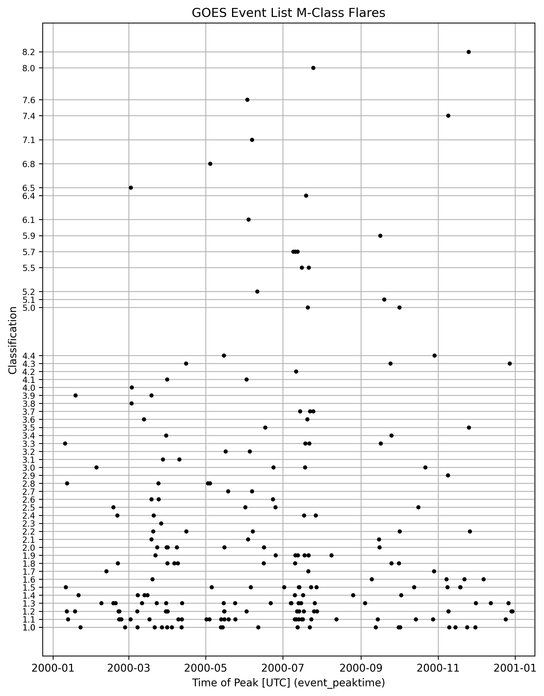

The data from my project is from two files
HW4_3.xray.txt, which created by code in csi763.
Data obtained using download.py in the data directory of this repository. The code uses SunPy, which downloads data from HEK. The provenance of the downloaded data from HEK seems to be not publicly available. However, the information for the first two flares in year 2000 match the first two in this file (see header documentation).
Figure 1: Time series of -class flares in querying_the_GOES_event_list.2000.csv

Look up more references using Google Scholar with query “GOES flare event list”.